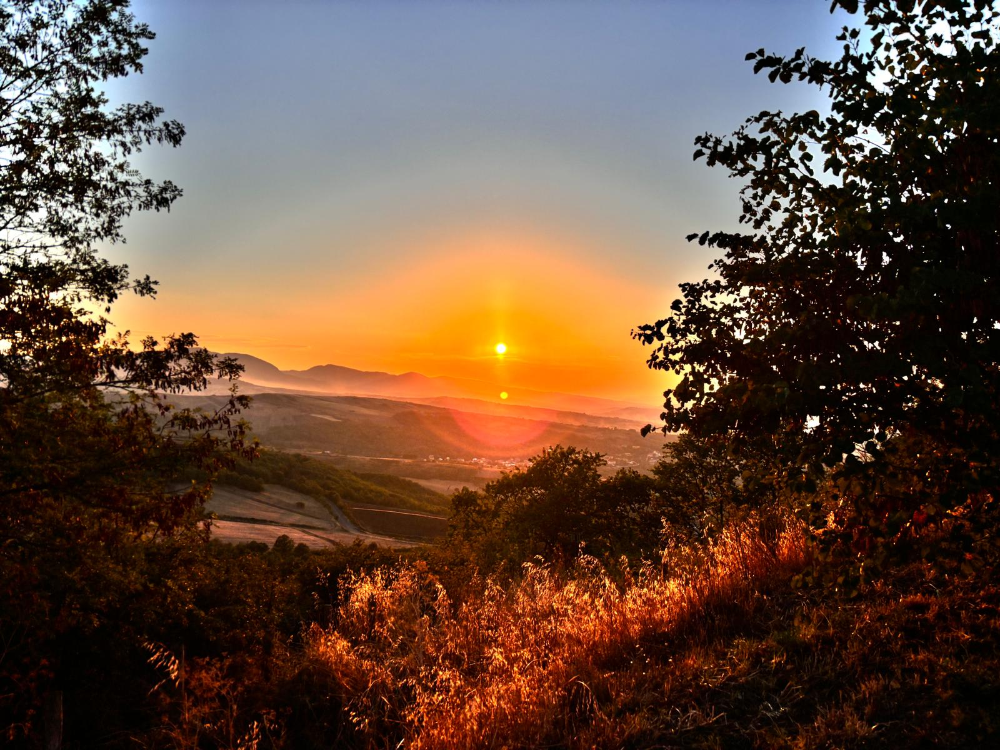
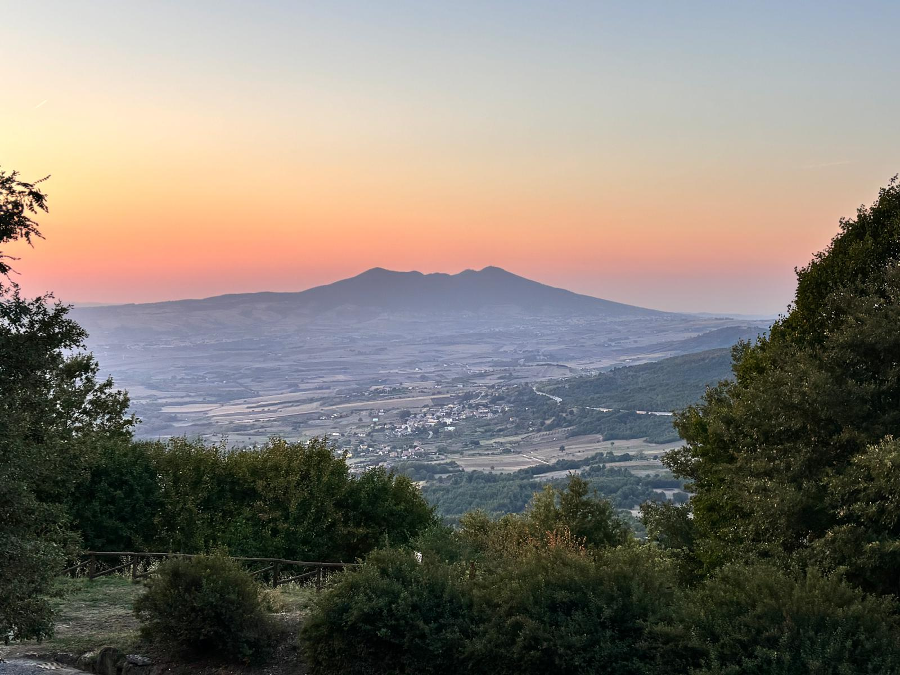

Introduzione
Salve a tutti, mi chiamo Nolè Nicolas Pio. Sono uno studente di informatica presso l'Istituto di Istruzione Superiore "Einstein-De Lorenzo".
Lo scopo di questo sito web è quello di raccogliere lo storico della mia carriera da sviluppatore, al fine di rendere pubblici tutti i miei progetti.
Di seguito sono presenti i miei dati anagrafici costantemente aggiornati. Per ulteriori informazioni puoi contattarmi qui.
LE MIE PASSIONI
La passione per la fotografia nasce spesso dal desiderio di catturare e immortalare momenti, emozioni e paesaggi che altrimenti svanirebbero nel tempo
È un’arte che permette di vedere il mondo con occhi diversi, interpretandolo e raccontandolo attraverso l’obiettivo della fotocamera
Per chi ama la fotografia, ogni scatto è una possibilità di fermare l’attimo, di raccontare una storia senza parole.
La fotografia offre una grande libertà creativa: puoi scegliere come inquadrare, illuminare e comporre ogni immagine, trasformando anche scene quotidiane in opere uniche
Ogni foto, che sia un ritratto, un paesaggio o una scena di vita urbana, porta con sé un’infinità di dettagli e significati che spesso solo l’osservatore più attento può apprezzare.
Le mie foto preferite
|  |  |
|---|
I miei social network
| Piattaforma | Link |
|---|---|
| Visita | |
| Visita | |
| Telefono | Chiama |
| Scrivimi |